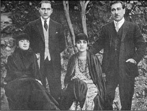

LIV
İsmet hakkındaki gensoru önergesinin reddedilmesi kıl payıyla sağlanabildi. İsmet öfkeden çılgına dönmüştü, ne ki, Mustafa Kemal Çankaya’da kalmış ve gensoru olayına hiç müdahale etmemişti. Muhalefet gittikçe cesaretini artırmıştı. Rauf’un önderliğinde İstanbul’da Selanikli Yahudi Cavit’in evinde toplanarak “Terakkiperver Cumhuriyet Fırkası” adı altında, yeni bir parti kurdular. Sürgün edilen Halife’nin çevresinde toplanmış olan tüm muhalifler ile eski İttihat ve Terakki Cemiyeti’nin kalıntıları, onlara katıldı. Mustafa Kemal yandaşlarının çoğu da onların tarafına geçti: Parti programlarını yayımladılar; burada anayasal bir hükümet ve diktatörlüğün her türüne direnmeyi savundular. Ne ki, Mustafa Kemal hâlâ Çankaya’daki suskunluğunu korumaktaydı.
Siyasal partilerdeki muhalefet acılaşıyordu. Sinirler en küçük bir kışkırtmayla alevlenecek kadar gergindi.
Ankara, kıraç bozkırların ortasında yer alan virane bir köyden başka bir şey değildi. Ne eğlence ne de rahatlama imkânlarına sahipti. Ankara’da yaşam, çevredeki arazi kadar kasvetli ve konforsuzdu. Savaş sürerken, mebus ve subayların cankurtaranı yurtseverlik ateşi olmuştu. Savaş sona erince hepsi de sürdükleri yaşamın kötü koşullarını çok şiddetli hissetmişlerdi. Hepsi de İstanbul’un lüks ve tatlı yaşamına alışkındılar. Ankara’da tek yapılacak iş ve tek eğlence yolu, politikaydı. Politikacılar bütün gün burun burunaydılar. Birbirlerinden uzak durma imkânları yoktu. Sinirler olağanüstü gerilmişti.
Mustafa Kemal’in taraftarları bir bir elden gidiyordu. Ne muhaliflerini ne de yandaşlarını denetimi altında tutamayan bir diktatör için, bu tehlikeli bir durumdu. Sokaklarda, tahtakurusu dolu otellerde, döküntü lokantalarda çekişmeler ve kavgalar oluyordu. Muhalefet, vatan hainleri ve padişah taraftarları şeklinde adlandırılıyordu. Onlar da Mustafa Kemal’in yandaşlarından, bir müstebidi destekleyen kabadayılar çetesi olarak adlandırmak yoluyla intikam alıyorlardı.
Meclis’te şiddet sahneleri boy göstermişti. Tabancalar çekiliyordu. 8Halil adında bir albay İsmet’i itham etti. “Külhanbey”lerden biri tarafından Meclis kürsüsünün önünde vuruldu; polis “külhanbeyi”ni yakalamaya9 cesaret edemedi.
Bir başka mebus Ali Şükrü, Mustafa Kemal’e yönelik bir hücuma öncülük etti. Gerçekten son derece güçlü ve kindar bir konuşmacıydı. Laz muhafızların reisi olan Osman Ağa, Ali Şükrü’nün icabına bakmaya karar verdi.
Osman bir çeteci ve Karadeniz kıyısındaki Giresun kasabasının belediye başkanıydı. 1920’de Hıristiyanlara karşı vahşice muamelesinden dolayı kötü bir şöhret kazanmıştı. Yunanlıların İzmir’deki mezaliminin öcünü almak için, beş yüz kişiyi soğukkanlılıkla kurşuna dizdiği söyleniyordu. Zührevi bir hastalığa yakalanmıştı. Hastalık beynine sirayet etmiş, bu yüzden öldürmekten zevk duyar olmuştu. Vahşi ve zalimdi. Cumhurbaşkanı’nın muhafızlığını yapması, Ankara’da uzun zamandır büyük bir skandal olarak değerlendirilmekteydi.
Ona bu emri Mustafa Kemal’in verip vermediği bilinmiyorsa da, Osman Ağa harekete geçmişti. Şükrü’yle dostluk kurdu, Çankaya’nın müştemilatından olan evine yemeğe davet etti, orada yardımcılarıyla birlikte Ali Şükrü’yü boğazlayıp cesedini kayalıklara attılar.
Ceset bulunduğunda, herkes ayağa kalktı. Meclis Osman’ın tutuklanmasını istedi. Kendisinin emir kulu olduğunu söyleyen Laz, Gazi’nin koruması altında olduğunu iddia etti. Mustafa Kemal sadece kısa bir süre daha onu korumayı sürdürdü. Sonra kenara çekildi.
Osman muhafızlık binasında polise karşı barikat kurdu. Laz avanesi çılgın bir halde ayaklanıp, Mustafa Kemal’i kaçırmaya kalktı. Arka kapıdan bir otomobile binerek doğru Rauf’un istasyon yakınlarındaki evine sığınan Mustafa Kemal’i birkaç dakika farkla ellerinden kaçırdılar. Aceleyle Osman’ın yardımına koştular. Çankaya’ya askeri birlikler gönderildi; büyük bir çatışma oldu: Osman, kendisini ele verdiği için Mustafa Kemal’e söverek öldü ve Laz avanesi de dağıtıldı. Haberler Karadeniz sahilinde yayıldı ve Lazlar Mustafa Kemal’den öç almaya yemin ettiler. Hikâye öğrenildikçe Ankara’da ve bütün Türkiye’de Mustafa Kemal aleyhinde bir kızgınlık baş gösterdi.
Bunun üzerine Mustafa Kemal uzlaşma yolunu bulmaya çalıştı. Kırsal kesimde yaşayan halkı memnun etmek için aşar vergisini kaldırdı, fakat bu da halkı yiyip bitiren yoksulluk içinde kısa sürede unutuldu gitti. Son olarak, İsmet’i azledip yerine Fethi’yi başbakanlığa getirdi.
İsmet’ten iyiden iyiye bıkmaya başlamıştı. Küçük adam artık kibirli ve rahatsız edici olmuştu. Davranışlarıyla herkesi kendisinden soğutmuştu. Ordudaki sert amir tavrını Meclis’te de sürdürüyordu. Meclis’e, hükümet dairelerine ve astlarına karşı son derece otoriterce hükmediyordu. Çok inatçı olmuştu. Mali konularda cahil, siyasette yetersiz olduğu anlaşıldığı halde, herhangi bir konuda öğüt almaya bile tahammül edemiyordu.
Dahası, Mustafa Kemal’in özel yaşamına karışmaya, arkadaşlarına karşı çıkmaya ve “külhanbeyler”e düşmanlığını açıkça ortaya koymaya başlamıştı. Birkaç kere de, Latife’yle bir olup ona karşı cephe almıştı.
Ülkedeki bütün dertler göz önüne alınırsa, bir değişikliğin herkesi rahatlatacağı açıktı. Mahcup, karşısındakini memnun edici tavırları ve hiçbir şeyin bozamayacağı mülayimliğiyle Fethi, herkesçe sevilen bir kişilikti. Fethi’yi Başvekil yapmaya karar verdi.
Muhalefet bu kararı bir ödün olarak değil, kendilerine ait bir zafer olarak algıladı. Bu kez bizzat Mustafa Kemal’e saldırdılar.
Onu ezmekte ve ülkenin yönetimini kendileriyle paylaşmaya zorlamakta kararlıydılar. Meclis’e Cumhurbaşkanının yetkilerini epeyce kısıtlayan bir yasa tasarısı sundular. Oturum çok hararetli geçti ve tasarı yalnızca küçük bir farkla reddedildi.
Bu, Mustafa Kemal için kritik bir dönemdi. Bütün memleket savaş sonrası tepkisi içinde ve gücenikti. Lazlar ayaklanmaya hazırlanıyorlardı. Halk Fırkası disiplinli yapısını yitirmekteydi. Devranın döndüğünü düşünen pek çok yandaşı onu terk ederek Rauf’a katılmıştı.
Bavullarını toplayıp onu terk ederek İstanbul’a dönen sevgililerinden birisi, yüzünde alaycı bir gülüşle, “O bitmiştir, foutu, tükenmiş; artık işe yaramaz” demişti.

Mustafa Kemal ve Fethi Bey eşleriyle birlikte.
Orduya güvenemezdi. Doğu bölgesinde hocalar vaazlarında ona karşı bir kampanyayı kışkırtıyorlardı; Nasturiler ayaklanmış ve İngiltere Musul hakkında bütün saygınlığını temelinden sarsmış olan bir ültimatom vermişti.